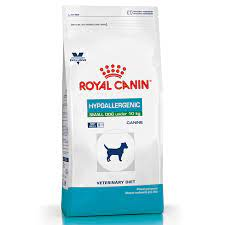
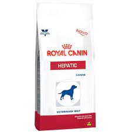
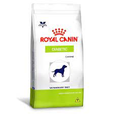
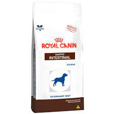
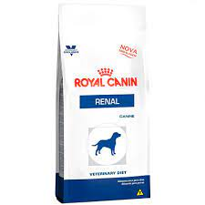
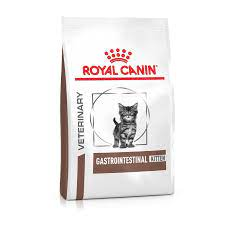
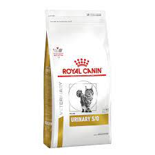
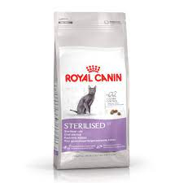

| Imagen | Nombre | Descripción |
|---|
|  | Royal Canin Vet Small Dog Dieta - Hipoalergénico |
- Recomendado para perros con problemas de alergia
- Disponible para razas pequeñas, medianas y grandes
|
|  | Royal Canin Vet Dog Dieta - Hepático |
- Recomendado para perros con problemas hepáticos
- Disponible para razas pequeñas, mediana y grandes
|
|  | Royal Canin Vet Dog Dieta - Diabético |
- Recomendado para perros diabéticos
- Disponible para razas pequeñas, medianas y grandes
|
 | Royal Canin Vet Dog Dieta - Cardíaco |
- Recomendado para perros con problemas caríacos
- Disponible para razas pequeñas, medianas y grandes
|
|  | Royal Canin Vet Dog Dieta - Gastroinstestinal |
- Recomendado para perros con problemas intestinales
- Disponible para razas pequeñas, medianas y grandes
|
|  | Royal Canin Vet Dog Dieta - Renal |
- Recomendado para perros con problemas renales
- Disponible para razas pequeñas, medianas y grandes
|
 | Royal Canin Vet Cat Dieta - Hipoalergénico |
- Recomendado para gatos con problemas de alergia
- Disponible para todas las razas
|
|  | Royal Canin Vet Cat Dieta - Gastroinstestinal |
- Recomendado para gatos con problemas intestinales
- Disponible para todas las razas
|
|  | Royal Canin Vet Cat Dieta - Urinario |
- Recomendado para gatos con problemas urinarios
- Disponible para todas las razas
|
|  | Pro Plan Cat Dieta - Castrados |
- Recomendado para gatos castrados
- Disponible para todas las razas
|